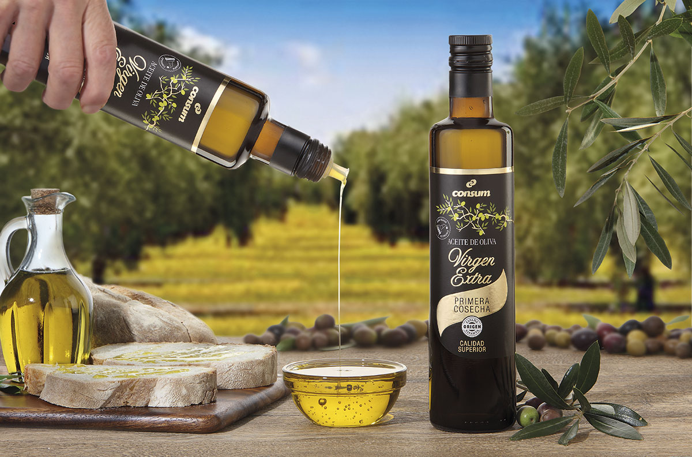
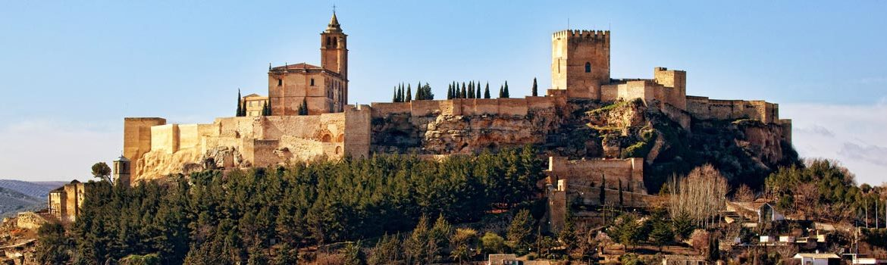

Aceite de Oliva Virgen Extra
Elaborado con aceitunas de la variedad Picual, procedentes del Parque Natural de Cazorla, Segura y Las Villas y con la certificación de calidad de la segunda Denominación de Origen más antigua de España, la Denominación de Origen Sierra de Segura. Tierras de Tavara Selección es un Aceite de Oliva Virgen Extra de exquisito sabor a aceituna madura, ligeramente amargo, picante y muy equilibrado, de color amarillo verdoso, olor frutado intenso y acidez aproximada de 0,5º. Las características de este aceite de oliva virgen extra proceden del medio natural donde se produce. El Olivar de Alta Montaña en el que se entremezclan los olivos y los pinares a una altitud media superior a los 900 m en pleno Parque Natural de Cazorla, Segura y Las Villas. Por eso nuestros aceites son el paradigma de los Vírgenes Extra de Alta Montaña.
Contar con una Denominación de Origen supone dos ventajas principales: por un lado, reconoce el origen y las características diferenciadoras de un producto en concreto. Es decir, solo los aceites de oliva virgen extra con las características de los obtenidos en la Sierra de Segura, se pueden encontrar en la Sierra de Segura. Y segundo, certifican la máxima calidad del producto a través de los rigurosos controles y auditorías que el Consejo Regulador de la Denominación de Origen Sierra de Segura realiza durante todo el año. Por lo tanto, a la hora de comprar aceite de oliva virgen extra convencional, el de toda la vida, contar con una denominación de origen es un extra y una garantía.
Aceite de Oliva Virgen Extra Ecológico
RECOLECCIÓN
Aceite de oliva virgen extra de producción ecológica y cosecha temprana obtenido por extracción en frío entre 22ºC y 24ºC, de aceitunas de la variedad picual recolectadas en verde durante los meses de Octubre-Noviembre. Cosecha propia de olivar familiar y ecológico.
CATA
Verde y transparente con un alto contenido en antioxidantes naturales como son los polifenoles y vitamina E. Olor frutado intenso de aceituna verde, hierba recién cortada y hoja de olivo. Notas de tomate y alcachofa, con ligeros toques a hoja de higuera.
MARIDAJE
Ideal para ensaladas, cremas, tostadas y para mojar pan al natural.
Aceite de oliva de Alcala la Real
Aceite de Oliva Virgen Extra Top 900 es el producto estrella de nuestra marca, un aceite de oliva virgen extra procedente de los olivos de la Sierra Sur de la Provincia de Jaén con los que se obtienen un aceite de oliva de Jaén virgen extra con cualidades excepcionales desde el punto de vista alimentario, por su gran contenido en antioxidantes, antiinflamatorios, efecto saciante y favorecedor de la absorción de nutrientes. Adicionalmente al sabor y al aroma, su permanencia en el tiempo conservando todas estas propiedades lo hacen un AOVE único en el mercado.